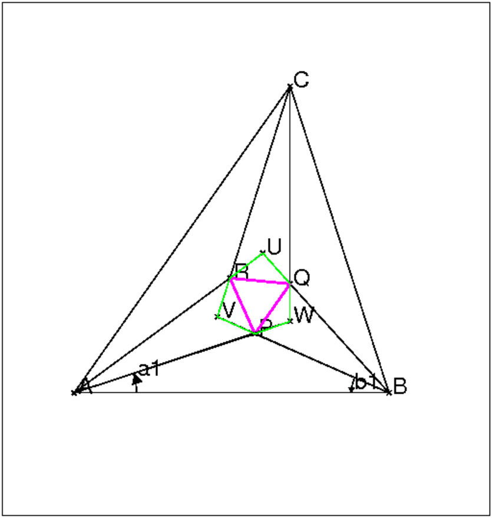
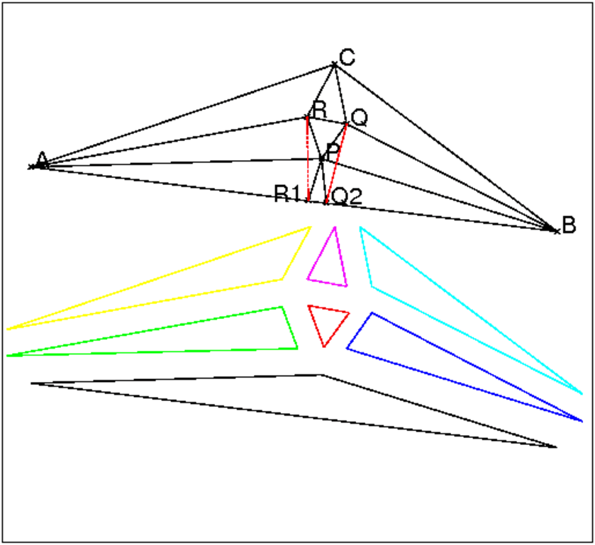
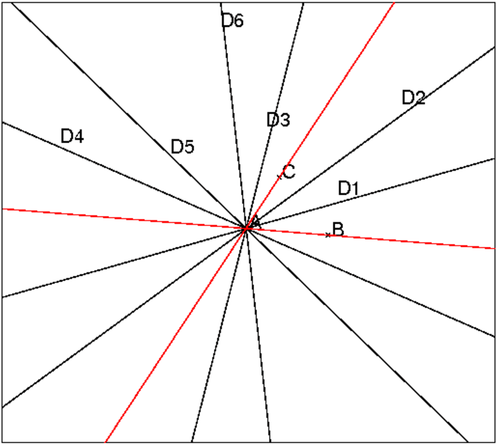
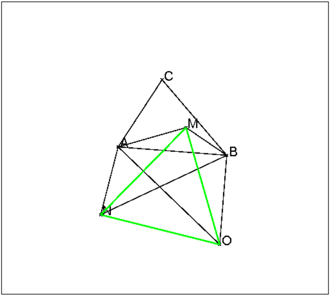
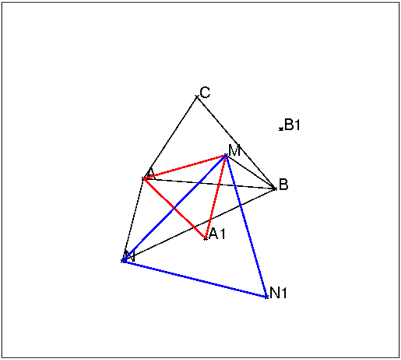
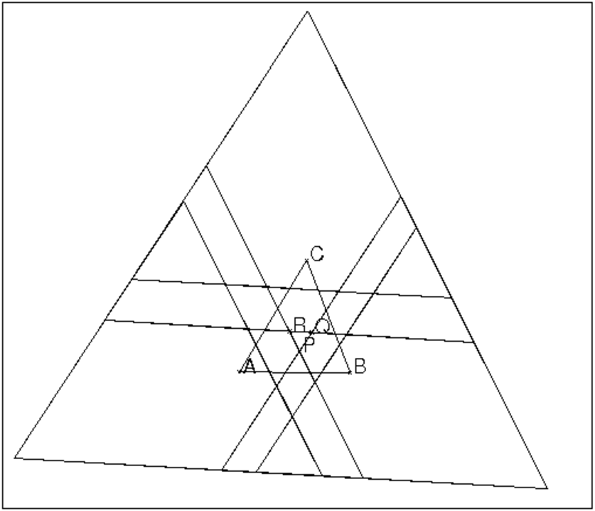

Soit un triangle ABC et ses trissectrices intérieures.
Soient P,Q,R les points de ces trissectrices tels que le triangle ABP
(respectivement BCQ, CAR) ait comme angles
A/3 et B/3 (respectivement
B/3 et C/3, C/3 et
A/3), alors le triangle PQR est équilatéral.
De plus si U, V, W sont les points de ces trissectrices tels que le
triangle ABU (respectivement BCV, CAW) ait comme angles
2A/3 et
2B/3 (respectivement 2B/3 et
2C/3, 2C/3
et 2A/3),
alors les triangles URQ, VRP, WPQ sont isocèles.
On remarquera que le triangle isocèle URQ a comme angles :
U=π− 2A/3− 2B/3
R=Q= A/3+ B/3.
On prend comme paramètres a1 et b1 qui représentent le tiers
des angles A et B du triangle ABC.
Quitte à faire une similitude, on peut choisir A à l’origine du
repère et B au point d’affixe 1, le point C a alors
comme affixe :
|
C est donc sur la droite passant par A de pente tan(3*a1) et sur la
droite passant par B et de pente −tan(3*b1).
On tape :
A:= point(-4.95-1.777*i);
B:= point(3.786-2.876*i);
C:= point(0.722+1.9*i);
a1:=(angle(A,B,C))/3;
b1:=(angle(B,C,A))/3;
c1:=eval(pi/3-a1-b1);
P:=inter(rotation(A,a1,droite(A,B)),rotation(B,-b1,
droite(B,A)))[0];
Q:=inter(rotation(C,-c1,droite(C,B)),rotation(B,b1,
droite(B,C)))[0];
R:=inter(rotation(A,-a1,droite(A,C)),rotation(C,c1,
droite(C,A)))[0];
U:=inter(rotation(A,2*a1,droite(A,B)),rotation(B,-2*b1,
droite(B,A)))[0];
V:=inter(rotation(C,-2*c1,droite(C,B)),rotation(B,2*b1,
droite(B,C)))[0];
W:=inter(rotation(A,-2*a1,droite(A,C)),rotation(C,2*c1,
droite(C,A)))[0];
triangle(A,R,C);
triangle(B,Q,C);
triangle(A,P,B);
triangle(P,Q,R);
triangle(U,Q,R);
triangle(V,P,R);
triangle(W,Q,P);
Remarque
On peut aussi utiliser la définition d’une droite par un point et sa pente
pour définir les points C et P ce qui nous dispense faire les
calculls des coordonnées de C et P.
On peut aussi taper :
A:=point(0); B:=point(1); a1:=0.32; b1:=0.42; TA1:=droite(A,pente=tan(a1)); TA2:=droite(A,pente=tan(2a1)); TA3:=droite(A,pente=tan(3a1)):; TB1:=droite(B,pente=-tan(2b1)):; TB2:=droite(B,pente=-tan(b1)):; TB3:=droite(B,pente=-tan(3b1)):; C:=inter_unique(TA3,TB3); TC1:=droite(C,pente=tan(2a1-b1+pi/3)):; TC2:=droite(C,pente=tan(a1-2b1+2pi/3)):; TC3:=droite(C,pente=tan(3a1+pi/3)):; P:=inter_unique(TA1,TB2); Q:=inter_unique(TB1,TC2); R:=inter_unique(TC1,TA2); triangle(A,R,C); triangle(B,Q,C); triangle(A,P,B); triangle(P,Q,R,couleur=magenta+line_width_2); pq2:=longueur2(P,Q); pr2:=longueur2(P,R); qr2:=longueur2(Q,R); U:=inter_unique(TB1,TA2); V:=inter_unique(TB2,TC1); W:=inter_unique(TC2,TA1) normal(longueur2(W,Q)-longueur2(W,P)); normal(longueur2(U,Q)-longueur2(U,R)); normal(longueur2(V,P)-longueur2(V,R)); angle(A,B,W,"a1"); angle(B,V,A,"b1"); polygone(W,Q,U,R,V,P,affichage=vert);
On obtient la figure du triangle de Morley :

et 0.0379352631434 comme valeur des carrés des 3 longueurs et des
valeurs de l’ordre de 10−14 pour les différence de longueurs.
Mais cela n’est pas une démonstration....
On place A à l’origine, B en (1,0) et on utilise 2 paramètres
a1 et b1, tels que les angles en A et B soient
3*a1, 3*b1
C est donc sur la droite passant par A de pente tan(3*a1) et
sur la droite passant par B et de pente -tan(3*b1), etc.
Pour faire une démonstration avec Xcas, on va remplacer :
a1:=0.32; par assume(a1=0.32); et
b1:=0.42; par assume(b1=0.42);
La figure reste la même mais les calculs sont faits avec les paramètres
formels a1 et b1:
assume(a1=0.32); assume(b1=0.42); A:=point(0); B:=point(1); TA1:=droite(A,pente=tan(a1)); TB1:=droite(A,pente=texpand(tan(2a1))); TA3:=droite(A,pente=texpand(tan(3a1))):; TB1:=droite(B,pente=-texpand(tan(2b1))):; TB2:=droite(B,pente=-tan(b1)):; TB3:=droite(B,pente=-texpand(tan(3b1))):; C:=inter_unique(TA3,TB3); TC1:=droite(C,pente=texpand(tan(2a1-b1+pi/3))):; TC2:=droite(C,pente=texpand(tan(a1-2b1+2pi/3))):; TC3:=droite(C,pente=texpand(tan(3a1+pi/3))):; P:=inter_unique(TA1,TB2); Q:=inter_unique(TB1,TC2); R:=inter_unique(TC1,TA2); triangle(A,R,C); triangle(B,Q,C); triangle(A,P,B); triangle(P,Q,R,couleur=magenta+line_width_2); pq2:=longueur2(P,Q); pr2:=longueur2(P,R); qr2:=longueur2(Q,R); U:=inter_unique(TB1,TA2); V:=inter_unique(TB2,TC1); W:=inter_unique(TC2,TA1) angle(A,B,W,"a1"); angle(B,V,A,"b1"); polygone(W,Q,U,R,V,P,affichage=vert); normal(pq2-pr2),normal(pq2-qr2); normal(longueur2(W,Q)-longueur2(W,P)); normal(longueur2(U,Q)-longueur2(U,R)); normal(longueur2(V,P)-longueur2(V,R));
Ou on tape dans un éditeur de programme
assume(a1=0.32);
assume(b1=0.42);
A:=point(0);
B:=point(1);
C:=point(texpand(tan(b1*3)/(tan(a1*3)+
tan(b1*3))*(1+i*tan(a1*3))));
P:=point(texpand(tan(b1)/(tan(a1)+
tan(b1))*(1+i*tan(a1))));
R:=(inter(droite(0,1+i*texpand(tan(2*a1))),
droite(C,C+1+i*texpand(tan(pi/3+2*a1-b1)))))[0];
Q:=(inter(droite(1,i*texpand(tan(2*b1))),
droite(C,C+1+i*texpand(tan(2*pi/3+a1-2*b1)))))[0];
U:=point(texpand(tan(2*b1)/(tan(2*a1)+
tan(2*b1))*(1+i*tan(2*a1))));
W:=(inter(droite(0,1+i*texpand(tan(a1))),
droite(C,C+1+i*texpand(tan(2*pi/3+a1-2*b1)))))[0];
V:=(inter(droite(1,i*texpand(tan(b1))),
droite(C,C+1+i*texpand(tan(pi/3+2*a1-b1)))))[0];
triangle(A,R,C);
triangle(B,Q,C);
triangle(A,P,B);
triangle(P,Q,R);
triangle(P,Q,W);
triangle(P,V,R);
triangle(U,Q,R);
pq2:=longueur2(P,Q);
pr2:=longueur2(P,R);
qr2:=longueur2(Q,R);
ur2:=longueur2(U,R);
uq2:=longueur2(U,Q);
vr2:=longueur2(V,R);
vp2:=longueur2(V,P);
pw2:=longueur2(P,W);
qw2:=longueur2(Q,W);
normal(pq2-pr2),normal(pq2-qr2);
normal(uq2-ur2);
normal(vp2-vr2);
normal(pw2-qw2);
On valide par OK
On obtient alors :
0,0,0,0,0
ce qui prouve que le triangle PQR est équilatéral et que les
triangles UQR, VPR et WPQ sont isocèles.
La figure

La démonstration
On suppose que les angles du triangle ABC valent 3a,3b,3c
(a+b+c=π/3).
On trace les trissectrices des angles B et C.
Soit D l’intersection des deux trissectrices tels que le triangle BCD aient
comme angles b et c et π−b−c.
Soient F et H tels que le triangle HFD soit isocéle d’angle à la base
a+c et H sur CD et F sur la 2-ième trissectrice de B : on
construit F sur la 2-ième trissectrice de B tel que l’angle
FDB =π/3+c=a+c+b+c,
Soient E et K tels que le triangle KED soit isocéle d’angle à la base
a+b et K sur BD et E sur la 2-ième trissectrice de C : on
construit F sur la 2-ième trissectrice de C tel que l’angle
CDK =π/3+b=a+b+b+c)
On a :
HDB=b+c=KDC
FDE+(a+c)+(b+c)+(π−b−c)+(a+b)+(b+c)=2π donc,
FDE=π−2a−2b−2c=π/3 et
BFD=π−b−(a+c)−(b+c)=a+π/3
CED=π−c−(a+b)−(b+c)=a+π/3
D est sur les bissectrices des angles CBF et BCE,
donc D est équidistant de BF et CE et puisque BFD=CED on a DE=DF
donc le triangle DEF est équilatèral (DE=DF et FDE=π/3).
Il reste donc à montrer que F et E sont sur les trissectrices de A :
on va montrer que FH et EK sont les trissectrices de A.
FK est la bissectrice de DKE
FB est la bissectrice de DBA donc
si on suppose que KE coupe AB an L, LF est la bissectrice de
L et
BLF=FLK=a (BKL=π−2(a+b) KBL=2b
donc BLK=2a) et comme BFH=a+b,
L,F,H sont alignés.
De même si on suppose que HF coupe AC en J, JE est la bissectrice
de J et
CJE=EJH=a et J,E,K sont alignés.
On a K,E,L sont alignés et J,E,K sont alignés.
On a L,F,H sont alignés et F,H,J sont alignés
donc J et L sont à l’intersection de EK et FH.
Mais J est sur AB et L sur AC, donc J et L sont confondus
en A et on en déduit que
FH et EK sont les trissectices de l’angle A.
Les instructions pour faire cette figure se trouve dans le fichier morley1.xws.
Lemme : Soient un triangle ABC, J le point de concours de ses
bissectrices intérieures et P un point de la bissectrice intérieure de
l’angle A se trouvant à l’intérieur du triangle ABC alors :
J et P sont confondus si et seulement si
BPC=(π+ A)/2.
En effet :
- si J et P sont confondus on a bien :
BJC=π−( B+ C)/2=(π+ A)/2.
- soit P est un point de la bissectrice intérieure de
l’angle A se trouvant à l’intérieur du triangle ABC et tel que
BPC=(π+ A)/2.
On remarque que BPC=π−(PBC+PCB) croît lorsque
P s’éloigne de A en restant sur la bissectrice intérieure de
l’angle A, donc si P ≠ J on a soit
BPC>BJC=(π+ A)/2 soit
BPC<BJC=(π+ A)/2.
On en déduit donc que P et J sont confondus.
On va démontrer le théorème pour un triangle ABC d’angles de mesure
3*a, 3*b et 3*c (a+b+c=π/3).
La forme de la preuve n’est pas courante : on part d’un triangle PQR
équilatéral et on construit à l’extérieur de ce triangle les triangles
isocèles UQR, VPR et WPQ d’angles :
QRU=UQR=a+b=π/3−c,
VPR=VRP=b+c=π/3−a et
WPQ=WQP=c+a=π/3−b.
En effet on sait d’après les calculs faits par Xcas que le triangle
PQR est équilatéral et que les triangles UQR, VPR et WPQ
sont isocèles.
Puis on construit le triangle ABC :
A est l’intersection de UR et de PW,
B est l’intersection de UQ et de PV et
C est l’intersection de VR et de QW.
On obtient la figure ci-dessus :
On peut montrer par des considération d’angles que V se trouve à
l’intérieur du triangle ARP (PRU+RPW>π et
VPR<π−RPW) etc...
On va montrer qu’alors P, Q, R sont les points de concours des
trissectrices intérieures de Morley.
Calculons quelques angles :
APV=π−(π/3−b)−π/3−(π/3−a)=a+b=π/3−c donc
APR=π/3−c+π/3−a=π/3+b
de même
ARV=π/3−b et
ARP=π/3−b+π/3−a=π/3+c
donc PAR=a
de même PBQ=b et QCR=c
AUB=RUQ=π−(2π/3−c)=π/3+2*c
APB=π−APV=2π/3+c=π/2+π/6−c=π/2+AUB/2
PU est la médiatrice de RQ puisque PQ=PR et UQ=UR.
PU est donc aussi la bissectrice intérieure de l’angle U et
APB=(π+AUB)/2 donc d’après le lemme :
P est le point de concours des bissectrices intérieures du triangle UAB
de même,
Q est le point de concours des bissectrices intérieures du triangle VBC
et
R est le point de
concours des bissectrices intérieures du triangle WAC.
L’angle A vaut donc 3a, l”angle B vaut donc 3b et l”angle C vaut donc 3c ce qui prouve que P, Q, R sont les points de concours des trissectrices intérieures de Morley.
On suppose tout d’abord le problème résolu c’est à dire que le triangle
PQR est équilatéral.
Soient :
a, b, c le tiers des mesures des angles du triangle ABC on a donc
a+b+c=π/3,
R1 le symétrique de R par rapport à PA : R1 se trouve sur AB
puisque PAR=PAB=a,
et de même, Q2 le symétrique de Q par rapport à PB
se trouve sur AB.
Le triangle PQ2R1 est donc isocèle (PR1=PR=PQ=PQ2),
on en
déduit que Q2R1P= PQ2R1,
et par symétrie que
ARP= PQB=γ.
On a :
APB+BPQ+QPR+RPA=2π
c’est à dire
(π−a−b)+(π−b−γ)+π/3+(π−a−γ)=2π
soit
γ=2*π/3−a−b=c+π/3.
Donc le triangle APR a comme angles : a, c+π/3, b+π/3,
le triangle BQP a comme angles : b, c+π/3, a+π/3,
de même le triangle CRQ a comme angles : c, b+π/3, a+π/3.
L’écriture en Latex de cette figure se trouve dans le fichier morleypuzzel.tex.

L’idée de Conway est de faire un puzzle avec 7 pièces (cf figure) :
avec ces 7 pièces on va pouvoir reconstituer un triangle ABC d’angle
3a, 3b et 3c dans lequel les trissectrices se coupent selon
le triangle équilatéral de Morley.
Les pièces du puzzles sont :
Il est alors facile de montrer, par des considérations de mesure d’angles et de longueurs, que les triangles s’emboitent bien.
On pose :
ARP=γ et
APR=β.
Si R est le rayon du cercle circonscrit du triangle ABC on a la relation :
| = |
| = |
| =2R |
En considérant les triangles APR, APB, ARC, ABC on peut montrer en utilisant les relations ci-dessus que :
| PR= |
| = |
|
On en déduit après différents calculs laissés au lecteur (voir les indications ci-dessous) que :
γ=c+π/3, β=b+π/3 et
PR=8Rsin(a)sin(b)sin(c)
Indications :
1/ Pour tout x on a :
2sin(x+π/3) sin(x+2π/3)=1/2−cos(2x+π)=1/2+cos(2x) et
2sin(x)(1/2−cos(2x))=3sin(x)−4sin(x)3=sin(3x) donc
4sin(x) sin(x+π/3) sin(x+2π/3)=sin(3x).
On obtient donc en remplacant sin(3c) et sin(3b) dans :
| = |
|
l’égalité :
sin(β)sin(c+π/3)=sin(γ)sin(b+π/3)
et donc
PR=8R sin(a) sin(b) sin(c)sin(c+π/3)/sin(γ)
2/ si sin(a)≠ 0, sin(b)≠ 0, sin(a+b)≠ 0, le système :
| ⎧ ⎨ ⎩ |
|
a comme solution x=a+kπ, y=b−kπ où k ∈ Z.
En effet on a y=a+b−x
donc sin(x)sin(b)=sin(a)(sin(a+b)cos(x)−cos(a+b)sin(x))
sin(x)(sin(b)+sin(a)cos(a+b))=cos(x)sin(a)sin(a+b)
on développe cos(a+b) et on obtient :
sin(x)cos(a)sin(a+b)=cos(x)sin(a)sin(a+b)
et donc puisque sin(a+b)≠ 0
sin(x−a)=0
d’ou le résultat.
Donc le système :
| ⎧ ⎪ ⎪ ⎪ ⎨ ⎪ ⎪ ⎪ ⎩ |
|
avec sin(b+π/3)≠ 0, sin(c+π/3)≠ 0, sin(π−a)≠ 0
a pour solutions :
β=b+π/3+kπ et γ=(c+π/3)−kπ où k ∈ Z.
Donc sin(γ)=sin(c+π/3) et donc
PR=8*R*sin(a)*sin(b)*sin(c)
La formule etant symétrique par rapport à a, b, c on a :
PR=8*R*sin(a)*sin(b)*sin(c)=RQ=PQ
Le triangle PQR est donc équilatèral.
Soit un triangle ABC et ses trissectrices.
On considère toutes les intersections de ces trissectrices.
Combien trouve-t-on de triangles équilatéraux ?
Soit un angle de droites (AB, AC) de mesure
3t+kπ (k entier) :
il y a 6 trissectrices (D1, D2, D3, D4, D5, D6) qui forment avec AB des angles de mesure :
| t, 2t, t+ |
| , 2t+ |
| , t+ |
| , 2t+ |
| =2t+ |
| +π |
On considère deux groupes de trois trissectrices (D1, D3, D5) et
(D2, D4, D6) : dans chaque groupe les trissectrices se déduisent l’une
de l’autre par des rotations d’angle π/3.
Voici les instructions contenu dans le fichier morleytri6 qui permet de tracer les 6 trissectrices de
l’angle de droite (AB,AC) :
A:= point(-1.2*i); B:= point(3.7-1.5*i); C:= point(1.5+1.1*i); t:=angle(A,B,C)/3; D1:=droite(A,A+(B-A)*exp(i*t)); D2:=droite(A,A+2*(B-A)*exp(i*t*2)); D3:=droite(A,A+(B-A)*exp(i*(t+pi/3))); D4:=droite(A,A+2*(B-A)*exp(i*2*(t+pi/3))); D5:=droite(A,A+(B-A)*exp(i*(t+2*pi/3))); D6:=droite(A,A+2*(B-A)*exp(i*(2*t+pi/3))); couleur(droite(A,B),1); couleur(droite(A,C),1);
On obtient la figure :

On fait tout d’abord avec Xcas un calcul numérique pour avoir une
idée du résultat.
Quitte à faire une similitude on peut choisir A à l’origine et
B au point d’affixe 1.
La site d’instructions ci-dessous calcule les coordonnées
des 108 points d’intersections des trissectrices entre elles : il y a
3× 6=18 trissectrices, sur chaque trissectrices
il y a 6+6=12 points d’intersections donc en tout 18× 12/2=108 points
d’intersections que l’on met dans la liste P.
Puis on met dans une matrice symétrique LO de dimension 108× 108
le carré des distances entre ces 108 points.
On met ensuite dans la variable trequi la liste des triplets formant un
triangle équilatéral, selon le calcul numérique.
A est une liste de 7 éléments qui sont :
A[0]=0, c’est l’affixe du sommet A du triangle,
A[1] est l’affixe d’un point situé sur la trissectrice AD1,
A[2] est l’affixe d’un point situé sur la trissectrice AD2, etc...
de même pour B et C (B[0]=1...).
Voici les instructions qui calcule les coordonnées
des 108 points d’intersections des trissectrices entre elles :
a1:=0.2;
b1:=0.4;
A:=[0,1+i*texpand(tan(a1)),1+i*texpand(tan(2*a1)),
1+i*texpand(tan(pi/3+a1)),
1+i*texpand(tan(2*a1+2*pi/3)),1+i*texpand(tan(a1+2*pi/3)),
1+i*texpand(tan(pi/3+2*a1))];
B:=[1,i*texpand(tan(2*b1)),i*texpand(tan(b1)),
i*texpand(tan(2*b1+2*pi/3)),i*texpand(tan(b1+pi/3)),
i*texpand(tan(pi/3+2*b1)),i*texpand(tan(2*pi/3+b1))];
C0:=texpand(tan(b1*3)/(tan(a1*3)+tan(b1*3))*(1+i*tan(a1*3)));
C:=[C0,C0+1+i*texpand(tan(pi/3+2*a1-b1)),
C0+1+i*texpand(tan(2*pi/3+a1-2*b1)),
C0+1+i*texpand(tan(2*pi/3+2*a1-b1)),
C0+1+i*texpand(tan(pi/3+a1-2*b1)),
C0+1+i*texpand(tan(2*a1-b1)),C0+1+i*texpand(tan(a1-2*b1))];
P:=[];
for (k:=1;k<=6;k++) {
for (j:=1;j<=6;j++){
P:=concat(P,affixe((inter(droite(A[0],A[k]),
droite(B[0],B[j])))[0]));
P:=concat(P,affixe((inter(droite(B[0],B[k]),
droite(C[0],C[j])))[0]));
P:=concat(P,affixe((inter(droite(A[0],A[k]),
droite(C[0],C[j])))[0]));
}
};
LO:=[];
for (k:=0;k<108;k++) {
LOL:=[];
for (j:=0;j<108;j++){
LOL:=concat(LOL,longueur2(P[k],P[j]));
}
LO:=append(LO,LOL);
};
trequi:=[];
for (k:=0;k<106;k++) {
for (j:=k+1;j<107;j++){
l:=LO[k,j];
for (s:=j+1;s<108;s++){
if ((abs(normal(l-LO[j,s]))<0.0000001) and
(abs(normal(l-LO[k,s]))<0.0000001)){
trequi:=append(trequi,[k,j,s]);
}
}
}
};
trequi;
On tape dans Xcas : size(trequi) : on obtient 54.
Cette liste contient donc 54 triplets ce qui veut dire qu’il y a
numériquement
54 triangles équilatéraux. Parmi ces triangles
il y en a 18 seulement qui mettent en jeu les trissectrices des 3 angles du
triangle.
Les autres triangles ont des sommets qui sont des intersections de
trissectrices de 2 angles du triangle : ceci était à prévoir et se
démontre facilement.
En effet si on considère deux angles de sommets A et B et leurs
trissectrices : les 3 trissectrices AD1, AD3, AD5 de l’angle A se
déduisent l’une de l’autre par des rotations de centre A et d’angle
π/3 et les intersections des 3 trissectrices (AD1, AD3, AD5)
de l’angle A avec les 3 trissectrices BD1, BD3, BD5 de l’angle B
déterminent 3 triangles équilatéraux.
Plus précisément soient M le point d’intersection de AD1 avec BD1,
N le point d’intersection de AD3 avec BD3, O le point
d’intersection de AD5 avec BD5.
Alors le triangle MNO est équilatèral.
On tape :
trissect(A,B,C):={
local t;
t:=angle(A,B,C)/3;
D1:=droite(A,A+(B-A)*exp(i*t));
D2:=droite(A,A+(B-A)*exp(i*t*2));
D3:=droite(A,A+(B-A)*exp(i*(t+pi/3)));
D4:=droite(A,A+(B-A)*exp(i*2*(t+pi/3)));
D5:=droite(A,A+(B-A)*exp(i*(t+2*pi/3)));
D6:=droite(A,A+(B-A)*exp(i*2*(t+2*pi/3)));
return([D1,D2,D3,D4,D5,D6,
couleur(droite(A,B),1),couleur(droite(A,C),1)]);
}:;
Puis, on tape :
A:= point(-1.2*i); B:= point(3.7-1.5*i); C:= point(1.5+1.1*i); TA:=trissect(A,B,C):; TB:=trissect(B,C,A):; M:=inter_droite(TA[0],TB[0]); N:=inter_droite(TA[2],TB[2]); O:=inter_droite(TA[4],TB[4]); triangle(A,B,C); segment(A,M),segment(B,M); segment(A,N),segment(B,N); segment(A,O),segment(B,O); triangle(M,N,O,affichage=2+epaisseur_ligne_2)
On obtient :

Montrons par exemple que MNO est un triangle équilatéral :
la rotation de centre M et d’angle π/3 transforme A en
A1, B en B1 et N en N1.

les triangles MAA1 et MNN1 sont des triangles équilatéraux directs
(triangle isocèle ayant un angle de π/3). M étant sur AD1, A1
se trouve donc sur AD5.
A1N1 fait un angle de π/3 avec AN. N étant sur AD3, A1N1 est
donc parallèle à AD5. On a ainsi montré que N1 se trouve sur AD5 c’est à dire que
A, A1, N1 sont alignés.
On montre de même que B, B1, N1 sont alignés et donc N1 se trouve sur BD5 d’où N1 et
O sont confondus. Ce qui prouve que MNO est un triangle équilatéral.
Donc les 3 trissectrices AD1, AD3, AD5 de l’angle A forment avec les
6 trissectrices de l’angle B, 6 triangles équilatéraux.
Donc les 6 trissectrices de l’angle A forment avec les
6 trissectrices de l’angle B, 12 triangles équilatéraux.
Donc il existe 3× 12=36 triangles équilatéraux de ce type.
On modifie le programme morley108 pour ne tester que des triangles obtenus par les intersections des trissectrices des 3 angles.
Un triangle est désigné soit :
- par un triplet qui sont ses sommets par exemple :
(A1B2, B1C2, C1A2) ce qui veut dire que le premier sommet est
l’intersection de la trissectrice 1 issue de A avec la trissectrice 2
issue de B etc...
soit
- par un triplet de couples par exemple : [[1,2],[1,4],[3,2]] désigne le même
triangle que (A1B2, B1C4, C3A2).
On écrit le fichier morley18 qui met dans la liste trequi les
triangles qui sont numériquement équilatéraux :
a1:=0.2;
b1:=0.4;
A:=[0,1+i*texpand(tan(a1)),1+i*texpand(tan(2*a1)),
1+i*texpand(tan(pi/3+a1)),1+i*texpand(tan(2*a1+2*pi/3)),
1+i*texpand(tan(a1+2*pi/3)),1+i*texpand(tan(pi/3+2*a1))];
B:=[1,i*texpand(tan(2*b1)),i*texpand(tan(b1)),
i*texpand(tan(2*b1+2*pi/3)),i*texpand(tan(b1+pi/3)),
i*texpand(tan(pi/3+2*b1)),i*texpand(tan(2*pi/3+b1))];
C0:=texpand(tan(b1*3)/(tan(a1*3)+tan(b1*3))*(1+i*tan(a1*3)));
C:=[C0,C0+1+i*texpand(tan(pi/3+2*a1-b1)),
C0+1+i*texpand(tan(2*pi/3+a1-2*b1)),
C0+1+i*texpand(tan(2*pi/3+2*a1-b1)),
C0+1+i*texpand(tan(pi/3+a1-2*b1)),
C0+1+i*texpand(tan(2*a1-b1)),C0+1+i*texpand(tan(a1-2*b1))];
P1:=[];
P2:=[];
P3:=[];
for (k:=1;k<=6;k++) {
for (j:=1;j<=6;j++){
P1:=concat(P1,affixe((inter(droite(A[0],A[k]),
droite(B[0],B[j])))[0]));
P3:=concat(P3,affixe((inter(droite(A[0],A[k]),
droite(C[0],C[j])))[0]));
P2:=concat(P2,affixe((inter(droite(B[0],B[k]),
droite(C[0],C[j])))[0]));
}
};
LO12:=[];
for (k:=0;k<36;k++) {
LOL12:=[];
for (j:=0;j<36;j++){
LOL12:=concat(LOL12,longueur2(P1[k],P2[j]));
}
LO12:=append(LO12,LOL12);
};
LO23:=[];
for (k:=0;k<36;k++) {
LOL23:=[];
for (j:=0;j<36;j++){
LOL23:=concat(LOL23,longueur2(P2[k],P3[j]));
}
LO23:=append(LO23,LOL23);
};
LO13:=[];
for (k:=0;k<36;k++) {
LOL13:=[];
for (j:=0;j<36;j++){
LOL13:=concat(LOL13,longueur2(P1[k],P3[j]));
}
LO13:=append(LO13,LOL13);
};
trequi:=[];
for (k:=0;k<36;k++) {
for (j:=0;j<36;j++){
l:=LO12[k,j];
for (s:=0;s<36;s++){
if ((abs(normal(l-LO23[j,s]))<0.0000001) and
(abs(normal(l-LO13[k,s]))<0.0000001)){
trequi:=append(trequi,[[iquo(k,6)+1,irem(k,6)+1],
[iquo(j,6)+1,irem(j,6)+1],
[irem(s,6)+1,iquo(s,6)+1]]);
}
}
}
};
trequi;
On fait Charger session du menu Fich de Xcas et on
sélectionne morley18 du répértoire
examples/geo pour exécuter ce fichier.
La liste trequi contient cette fois 18 triplets, il y donc
numèriquement 18 triangles équilatéraux dont les sommets sont définis
comme intersection des trissectrices des 3 angles du triangle.
On trouve comme contenu de trequi :
[[[1,2],[1,2],[1,2]], [[1,2],[1,4],[3,2]], [[1,4],[3,2],[1,2]], [[1,4],[3,6],[5,2]], [[1,6],[5,4],[3,2]], [[1,6],[5,6],[5,2]], [[3,2],[1,2],[1,4]], [[3,2],[1,6],[5,4]], [[3,4],[3,4],[3,4]], [[3,4],[3,6],[5,4]], [[3,6],[5,2],[1,4]], [[3,6],[5,4],[3,4]], [[5,2],[1,4],[3,6]], [[5,2],[1,6],[5,6]], [[5,4],[3,2],[1,6]], [[5,4],[3,4],[3,6]], [[5,6],[5,2],[1,6]], [[5,6],[5,6],[5,6]]]
Chaque triplet désigne les sommets d’un triangle. Avec la notation
A1B2 qui désigne l’intersection de la trissectrice 1 issue de
A avec la trissectrice 2 issue de B on a :
(A1B2, B1C2, C1A2),
(A1B2, B1C4, C3A2),
(A1B4, B3C2, C1A2),
(A1B4, B3C6, C5A2),
(A1B6, B5C4, C3A2),
(A1B6, B5C6, C5A2),
(A3B2, B1C2, C1A4),
(A3B2, B1C6, C5A4),
(A3B4, B3C4, C3A4),
(A3B4, B3C6, C5A4),
(A3B6, B5C2, C1A4),
(A3B6, B5C4, C3A4),
(A5B2, B1C4, C3A6),
(A5B2, B1C6, C5A6),
(A5B4, B3C2, C1A6),
(A5B4, B3C4, C3A6),
(A5B6, B5C2, C1A6),
(A5B6, B5C6, C5A6)
On dessine les 18 triangles.
On écrit un fichier morleydess18 qui va calculer les coordonnées des
27 points sommets de ces 18 triangles et dessiner ces 18 triangles.
On pourra avec un tel dessin faire bouger A ou B ou C.
On note DA (resp DB, DC) la liste des 6 trissectrices de l’angle A (resp B, C).
On remarquera dans la définition de DA, DB, DC :
- un zéro au début de la liste pour que la première trissectrice
soit d’indice 1 etc...
- un zéro en fin de liste pour que les objets graphiques situés dans la liste ne soient pas dessinés (pour ne pas surcharger la figure) (on aurait aussi pu employer la fonction nodisp).
A:=point(-2.35-i*2.28); B:=point(-0.684-i*2.3); C:=point(-1.35-i*0.61); a1:=angle(A,B,C)/3; a2:=angle(B,C,A)/3; a3:=pi/3-a1-a2; DA:=0,droite(A,A+(B-A)*exp(i*a1)):; DA:=DA,droite(A,A+(B-A)*exp(i*a1*2)):; DA:=DA,droite(A,A+(B-A)*exp(i*(a1+pi/3))):; DA:=DA,droite(A,A+(B-A)*exp(i*2*(a1+pi/3))):; DA:=DA,droite(A,A+(B-A)*exp(i*(a1+2*pi/3))):; DA:=DA,droite(A,A+(B-A)*exp(i*2*(a1+2*pi/3))),0:; DB:=0,droite(B,B+(C-B)*exp(i*a2)):; DB:=DB,droite(B,B+(C-B)*exp(i*a2*2)):; DB:=DB,droite(B,B+(C-B)*exp(i*(a2+pi/3))):; DB:=DB,droite(B,B+(C-B)*exp(i*2*(a2+pi/3))):; DB:=DB,droite(B,B+(C-B)*exp(i*(a2+2*pi/3))):; DB:=DB,droite(B,B+(C-B)*exp(i*2*(a2+2*pi/3))),0:; DC:=0,droite(C,C+(A-C)*exp(i*a3)):; DC:=DC,droite(C,C+(A-C)*exp(i*a3*2)):; DC:=DC,droite(C,C+(A-C)*exp(i*(a3+pi/3))):; DC:=DC,droite(C,C+(A-C)*exp(i*2*(a3+pi/3))):; DC:=DC,droite(C,C+(A-C)*exp(i*(a3+2*pi/3))):; DC:=DC,droite(C,C+(A-C)*exp(i*2*(a3+2*pi/3))),0:; P1:=[]; P1:=concat(P1,affixe((inter(DA[1],DB[2]))[0])); P1:=concat(P1,affixe((inter(DA[1],DB[4]))[0])); P1:=concat(P1,affixe((inter(DA[1],DB[6]))[0])); P1:=concat(P1,affixe((inter(DA[3],DB[2]))[0])); P1:=concat(P1,affixe((inter(DA[3],DB[4]))[0])); P1:=concat(P1,affixe((inter(DA[3],DB[6]))[0])); P1:=concat(P1,affixe((inter(DA[5],DB[2]))[0])); P1:=concat(P1,affixe((inter(DA[5],DB[4]))[0])); P1:=concat(P1,affixe((inter(DA[5],DB[6]))[0])); P2:=[]; P2:=concat(P2,affixe((inter(DB[1],DC[2]))[0])); P2:=concat(P2,affixe((inter(DB[1],DC[4]))[0])); P2:=concat(P2,affixe((inter(DB[1],DC[6]))[0])); P2:=concat(P2,affixe((inter(DB[3],DC[2]))[0])); P2:=concat(P2,affixe((inter(DB[3],DC[4]))[0])); P2:=concat(P2,affixe((inter(DB[3],DC[6]))[0])); P2:=concat(P2,affixe((inter(DB[5],DC[2]))[0])); P2:=concat(P2,affixe((inter(DB[5],DC[4]))[0])); P2:=concat(P2,affixe((inter(DB[5],DC[6]))[0])); P3:=[]; P3:=concat(P3,affixe((inter(DC[1],DA[2]))[0])); P3:=concat(P3,affixe((inter(DC[1],DA[4]))[0])); P3:=concat(P3,affixe((inter(DC[1],DA[6]))[0])); P3:=concat(P3,affixe((inter(DC[3],DA[2]))[0])); P3:=concat(P3,affixe((inter(DC[3],DA[4]))[0])); P3:=concat(P3,affixe((inter(DC[3],DA[6]))[0])); P3:=concat(P3,affixe((inter(DC[5],DA[2]))[0])); P3:=concat(P3,affixe((inter(DC[5],DA[4]))[0])); P3:=concat(P3,affixe((inter(DC[5],DA[6]))[0])); triangle(A,B,C); triangle(P1[0],P2[0],P3[0]); P:=point(P1[0]); Q:=point(P2[0]); R:=point(P3[0]); triangle(P1[0],P2[1],P3[3]); triangle(P1[1],P2[3],P3[0]); triangle(P1[1],P2[5],P3[6]); triangle(P1[2],P2[7],P3[3]); triangle(P1[2],P2[8],P3[6]); triangle(P1[3],P2[0],P3[1]); triangle(P1[3],P2[2],P3[7]); triangle(P1[4],P2[4],P3[4]); triangle(P1[4],P2[5],P3[7]); triangle(P1[5],P2[6],P3[1]); triangle(P1[5],P2[7],P3[4]); triangle(P1[6],P2[1],P3[5]); triangle(P1[6],P2[2],P3[8]); triangle(P1[7],P2[3],P3[2]); triangle(P1[7],P2[4],P3[5]); triangle(P1[8],P2[6],P3[2]); triangle(P1[8],P2[8],P3[8]);
On obtient :

On voit que ces triangles ont leur cotés parallèles.
On peut le faire montrer par Xcas avec le programme suivant se trouvant dans le fichier morleypara :
est_parallele(droite(P1[0],P2[0]),droite(P1[8],P2[8])); est_parallele(droite(P1[0],P2[0]),droite(P1[0],P3[6])); est_parallele(droite(P1[0],P2[0]),droite(P1[4],P2[4])); est_parallele(droite(P1[4],P2[4]),droite(P1[4],P3[1])); est_parallele(droite(P1[0],P2[0]),droite(P1[8],P2[8])); est_parallele(droite(P1[8],P2[8]),droite(P1[8],P3[5])); est_parallele(droite(P1[0],P2[0]),droite(P3[6],P2[5])); est_parallele(droite(P1[4],P2[4]),droite(P1[2],P3[3]));
Pour montrer plus facilement que les 18 triangles trouvés sont équilatéraux on va écrire dans le fichier equimorley une fonction ayant m,n,p,q,r,s comme paramètres représentant le triangle AmBn,BpCq,CrAs et qui teste si ce triangle est équilatéral :
equimore(m,n,p,q,r,s):={
assume(a1=0.3);
assume(a2=0.4);
A:=[0,1+i*texpand(tan(a1)),1+i*texpand(tan(2*a1)),
1+i*texpand(tan(pi/3+a1)),1+i*texpand(tan(2*a1+2*pi/3)),
1+i*texpand(tan(a1+2*pi/3)),1+i*texpand(tan(pi/3+2*a1))];
B:=[1,i*texpand(tan(2*a2)),i*texpand(tan(a2)),
i*texpand(tan(2*a2+2*pi/3)),i*texpand(tan(a2+pi/3)),
i*texpand(tan(pi/3+2*a2)),i*texpand(tan(2*pi/3+a2))];
C0:=texpand(tan(a2*3)/(tan(a1*3)+tan(a2*3))*(1+i*tan(a1*3)));
C:=[C0,C0+1+i*texpand(tan(pi/3+2*a1-a2)),
C0+1+i*texpand(tan(2*pi/3+a1-2*a2)),
C0+1+i*texpand(tan(2*pi/3+2*a1-a2)),
C0+1+i*texpand(tan(pi/3+a1-2*a2)),
C0+1+i*texpand(tan(2*a1-a2)),C0+1+i*texpand(tan(a1-2*a2))];
P:=affixe((inter(droite(A[0],A[m]),droite(B[0],B[n])))[0]);
Q:=affixe((inter(droite(B[0],B[p]),droite(C[0],C[q])))[0]);
R:=affixe((inter(droite(C[0],C[r]),droite(A[0],A[s])))[0]);
lpq:=longueur2(P,Q);
lpr:=longueur2(P,R);
lqr:=longueur2(Q,R);
return([normal(lpq-lpr),normal(lpq-lqr)]);
};
On fait Charger session du
menu Fich de Xcas et on selectionne equimorley du répértoire
examples/geo pour exécuter ce fichier, puis :
equimorley(5,6,5,6,5,6)
On trouve :
[0,0]
et cela prouve que le triangle (A5B6, B5C6, C5A6) est équilatéral.
puis par exemple :
equimorley(5,4,3,2,1,6)
On trouve :
[0,0]
et cela prouve que le triangle (A5B4, B3C2, C1A6) est équilatéral.
Avec la fonction equimore, on peut donc montrer que les 18 triangles
trouvés précédemment sont bien tous équilatéraux.